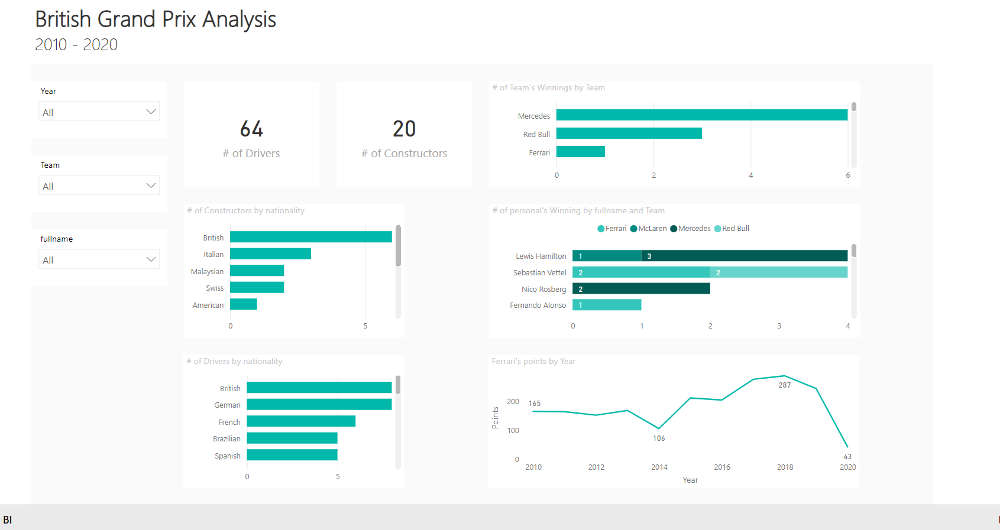

SQL & Power BI Project
Formula 1's British Grand Prix Analysis.
The Data Source
The dataset is called "Formula 1 World Championship (1950 - 2021)", which is gathered from Kaggle.
Business Problem
The challenge for this data analyst project is outlined below.
This has been used continuously to ensure that the right data has been selected, transformed, used in the data visualization which is meant to be passed on to the business users.
"As a Data analyst working at Ferrari, you are asked to visualize data that will help readers understand
how constructors have performed historically between 2010 and 2020 in the British Grand Prix.
You also know that there is an interest in details about the drivers, so if you find anything interesting
then don't hesitate to bring that in also.
The main task is still to show historical performance for different constructors with the possibility to select your
constructor."
Data Cleaning & Transformation (SQL)
To create the necessary data model for doing analysis and fulfilling the business needs to be defined in the user stories the following tables were extracted using SQL.
Below are the SQL statements for cleansing and transforming necessary data.
DIM_races
SELECT [raceId]
,[year]
--,[round]
--,[circuitId]
,[name]
,[date]
--,[time]
--,[url]
FROM [Formula1].[dbo].[races]
WHERE year BETWEEN 2010 AND 2020
AND name = 'British Grand Prix'
DIM_constructors
SELECT [constructorId]
--,[constructorRef]
,[name]
,[nationality]
FROM [Formula1].[dbo].[constructors]
DIM_drivers
SELECT [driverId]
--,[driverRef]
--,[number]
--,[code]
,[forename]
,[surname]
--,[dob]
,[nationality]
--,[url]
,[fullname]
FROM [Formula1].[dbo].[drivers]
FACT_constructor_standings
SELECT --[constructorStandingsId]
[raceId]
,[constructorId]
,[points]
,[position]
--,[positionText]
--,[wins]
,[Rank1]
FROM [Formula1].[dbo].[constructor_standings]
WHERE raceId IN (SELECT raceId from Formula1..races WHERE year BETWEEN 2010 AND 2020 AND name = 'British Grand Prix')
ORDER BY raceId, constructorId
FACT_driver_standings
SELECT --[driverStandingsId]
ds.raceId
,ds.driverId
,r.constructorId
,ds.points
,ds.position
--,[positionText]
--,[wins]
,ds.Rank1
FROM [Formula1].[dbo].[driver_standings] as ds
LEFT JOIN Formula1..results r
ON ds.raceId = r.raceId
AND ds.driverId = r.driverId
WHERE ds.raceId IN (SELECT raceId from Formula1..races WHERE year BETWEEN 2010 AND 2020 AND name = 'British Grand Prix')
ORDER BY raceId, constructorId, driverId
Data Model
Below is a screenshot of the data model after cleansed and prepared tables were read into Power BI.
Dashboard
The finished British GP Analysis dashboard with one page works as a dashboard and overview, to show historical performance over time, per constructors, and per drivers.
Click the picture to open the dashboard and try it out!
